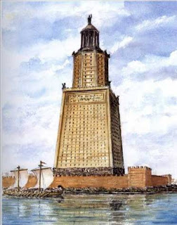

Александрийский маяк

Маяк на острове Фарос, открывавший вход в порт основанного Александром Македонским города Александрии (современный Египет), был построен в 280 году до нашей эры. Каменную башню высотой 120 метров возвели всего за пять лет, хотя для её строительства пришлось из острова сделать полуостров: между Фаросом и «большой землёй» насыпали дамбу, по которой доставляли строительные материалы.
Маяк не только указывал путь судам. Одновременно он был и крепостью, где размещались немалый гарнизон, запасы воды и пищи. На башне античные инженеры установили систему увеличивающих зеркал, с помощью которой наблюдатели обнаруживали вражеские корабли задолго до того, как они появлялись в пределах порта. Но эта сторожевая башня была к тому же и прекрасна, потому и попала в список чудес.
Уходили в историю сменяющие друг друга империи и государства, ветшал и маяк. Окончательно он был разрушен в XIV веке нашей эры. К сожалению, и в этом случае мы можем только предполагать, как именно выглядело это чудо света. Кроме словесных описаний современников иных свидетельств не сохранилось.